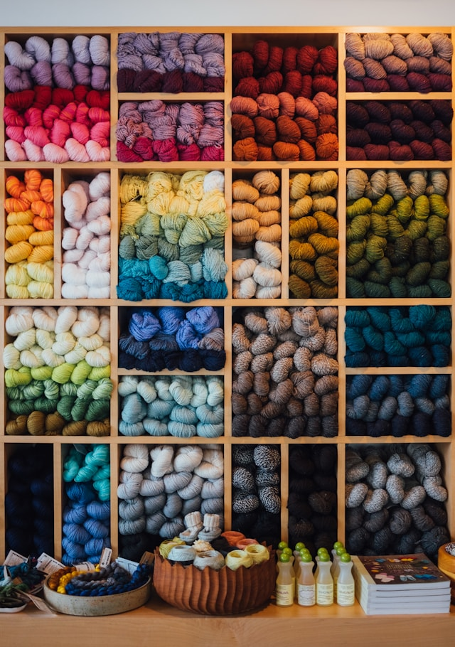

Rebecca
She/Her/Hers
Everett, WA
Three facts about me:
I spin fiber into yarn
I bake sourdough bread weekly (with gluten and gluten-free)
I just finished listening to The Magnus Archives
Fun Fact ideas you can use:
Places youve travelled
Accomplishments
Hobbies
Current game you're playing
Favorite sports team
Questions
If you could vacation anywhere, where would it be?
Scotland
Favorite Genre of Music?
Folk-pop
Three musicians/bands I really enjoy are:
Noah Kahan
The Lumineers
Hozier
One of scale of 1-10, where do you think your coding levels are?
4.5

Photo by
Paul Hanaoka
on
Unsplash